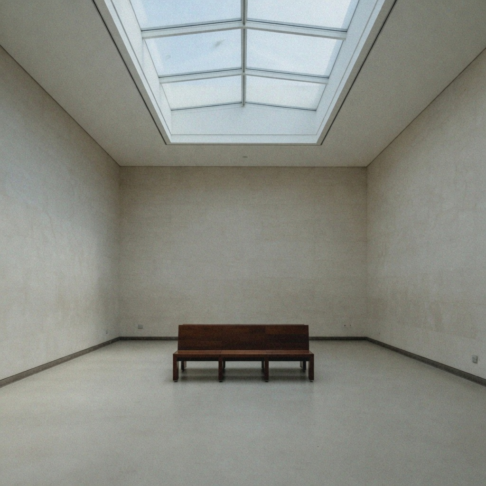

vanalog_video_texture · high
analog video texture
The specific instability of analog video: chroma crawl, luma grain, mild banding, scan-like texture.
clean digital field → heavy analog video texture
What it changes
Raising it should read as tape or tube texture, not as film grain.
- scan-like luma grain
- chroma crawl on edges
- mild banding
Aliases
VHS texture, tape texture, tube texture
Controlled examples
low
medium
high

Nearby
Commonly confused with
- vec_grain_structure: Film grain clumps. Analog video texture is scan-like and often chroma-noisy.
- vec_telecine_softness: Telecine is bandwidth smear. This is a texture field, not a softness.
- vec_vhs_bandwidth_loss: Bandwidth loss smears chroma and luma. Texture is the crawl and scan grain.
Studies
Open questions
- Can texture land on the fox without a letterbox?